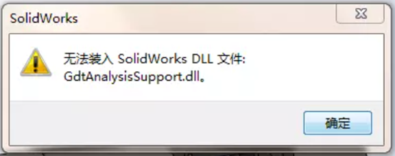

无法装入xxx.Dll
如果您的更新或安装是在2015年7月15日之后进行的，最有可能的解释是由2015年7月15日发布的Microsoft®update KB 3072630引起的已知冲突。此更新对Windows安装程序进行了更改。
方法：
\1. 点击“开始”，点击“运行”，在“打开”对话框中输入“regedit”，然后点击“确定”。
\2. 在注册表中找到并单击以下子键:注意:如果此子键不存在，请创建它。
1 | HKEY_LOCAL_MACHINE\SOFTWARE\Policies\Microsoft\Windows\Installer。 |
\3. 在“编辑”菜单中，转到“新建”，然后点击“DWORD值”。
\4. 对于DWORD名称，输入“RemappedElevatedProxiesPolicy”，然后按“Enter”。
\5. 右键单击“RemappedElevatedProxiesPolicy”，然后单击“Modify”。
\6. 在“value”数据框中输入“1”，然后单击“确定”。
\7. 修复SOLIDWORKS安装(S-050527)。
\8. 安装应用程序后，将DWORD值“RemappedElevatedProxiesPolicy”重置为“0”，以恢复KB 3072630安全修复。